Elegí tu material
Explorá los modelos y contanos qué espacio querés renovar.
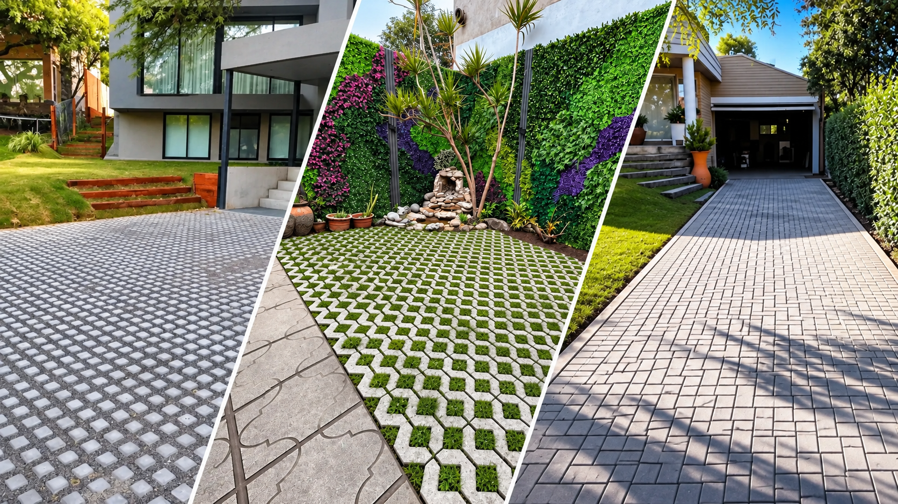
Premoldeados de hormigón
para darle forma a tus espacios.
En Cristalmat ofrecemos materiales y soluciones para proyectos residenciales, comerciales y profesionales.
Comercializamos premoldeados de hormigón, Garden Blocks, adoquines, losetas, bordes para piscinas y solárium.

Hormigón y verde, en equilibrio

Diseños para patios y accesos

Confort para tu piscina y solárium
Consultanos por los modelos disponibles de bordes atérmicos y solárium.
Transformá tus exteriores con superficies que combinan funcionalidad, diseño y césped.
Consultanos por tu obraAccesos, jardines y cocheras: cada espacio tiene su propia manera de transformarse.
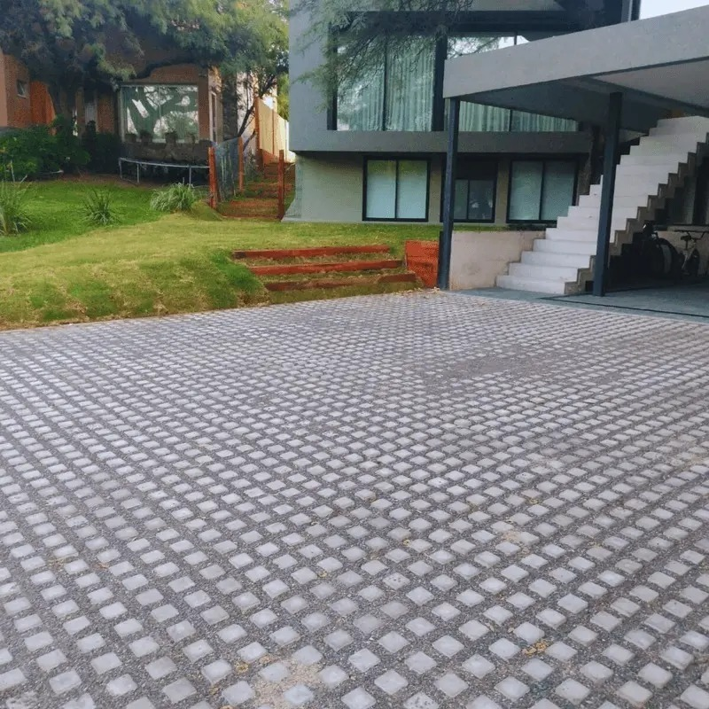

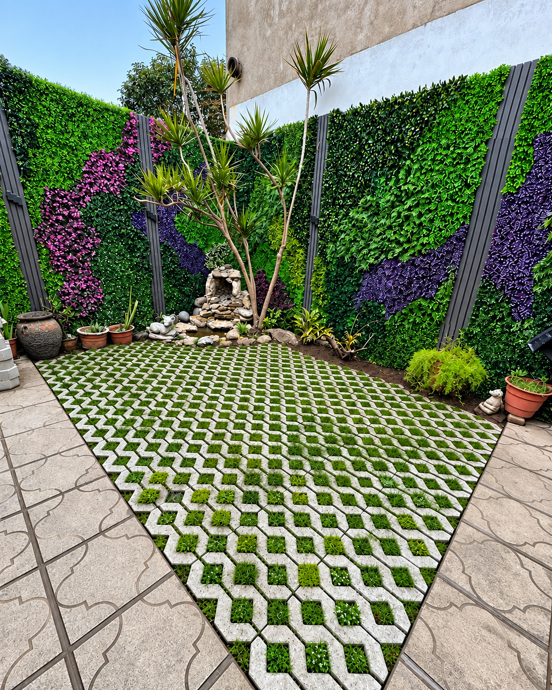
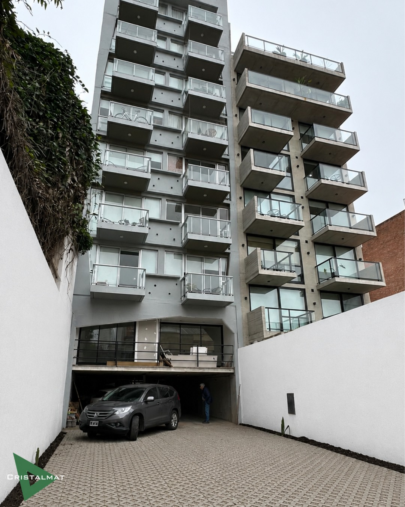
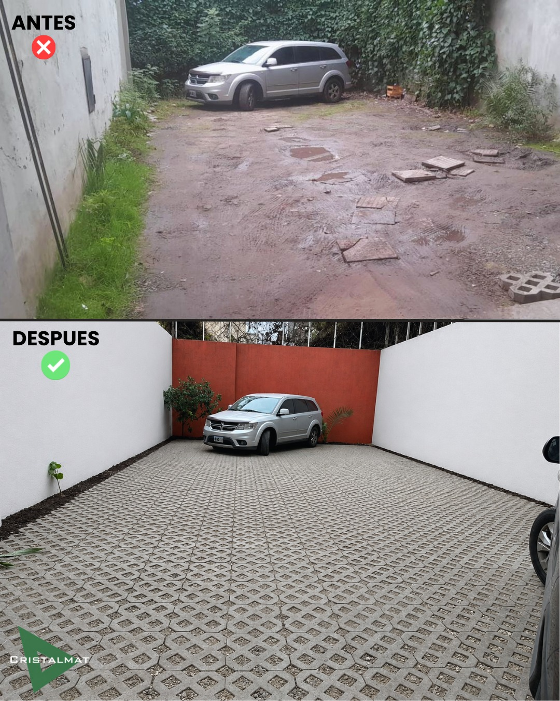

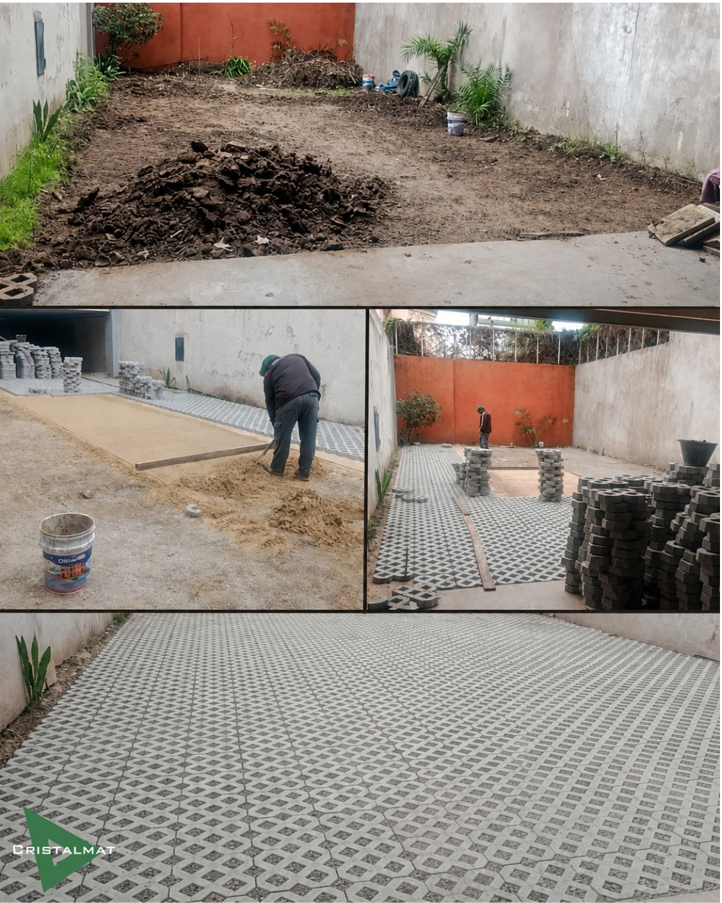
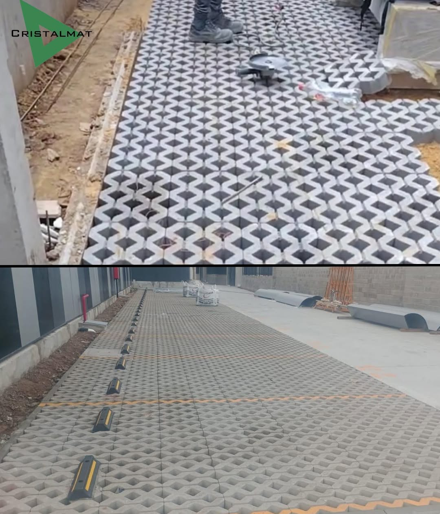
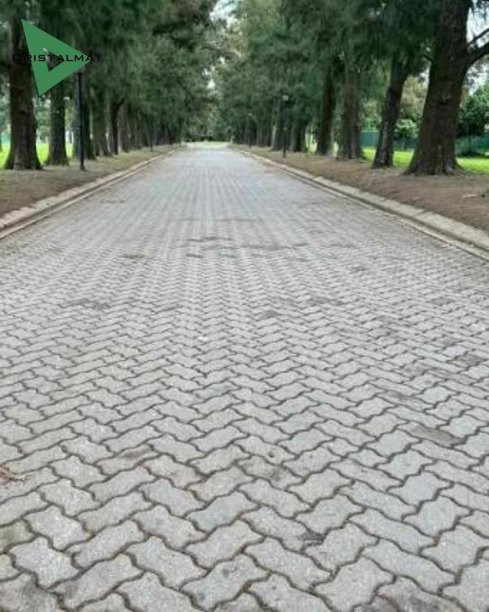
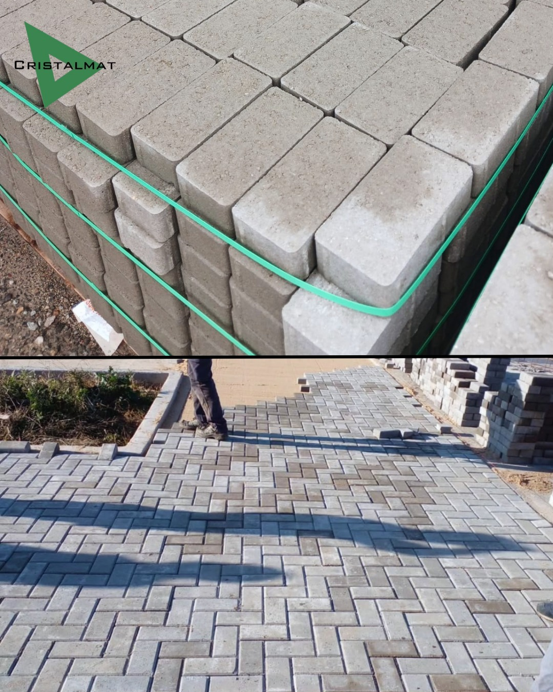
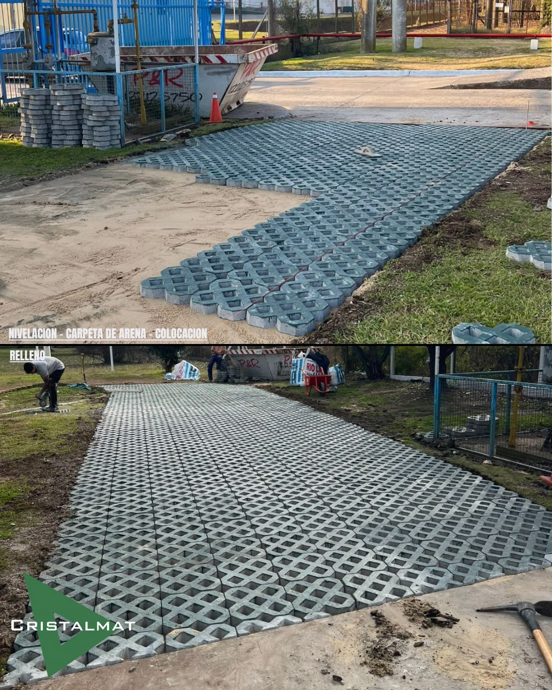

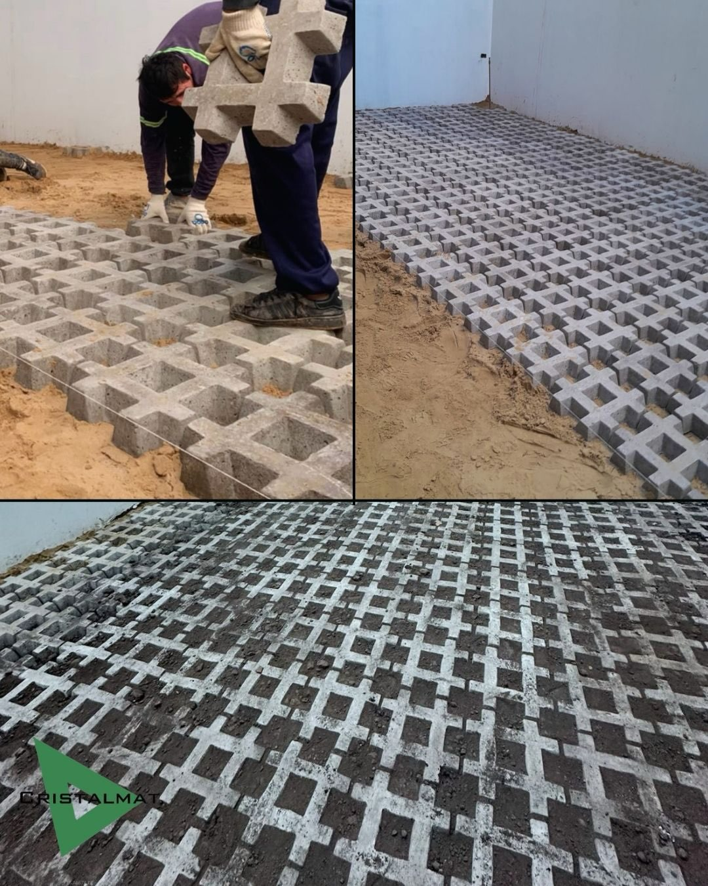

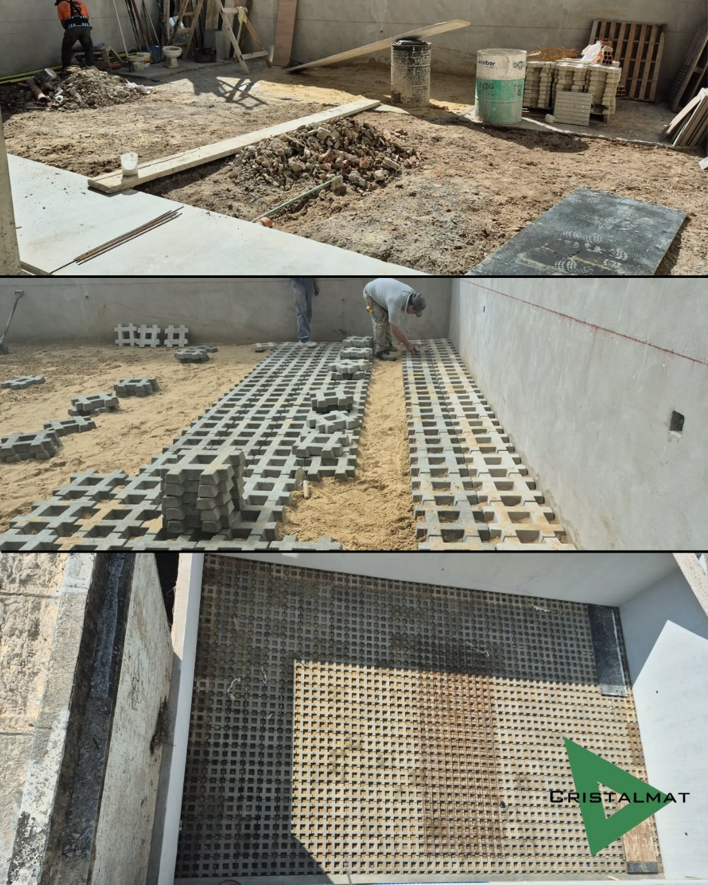
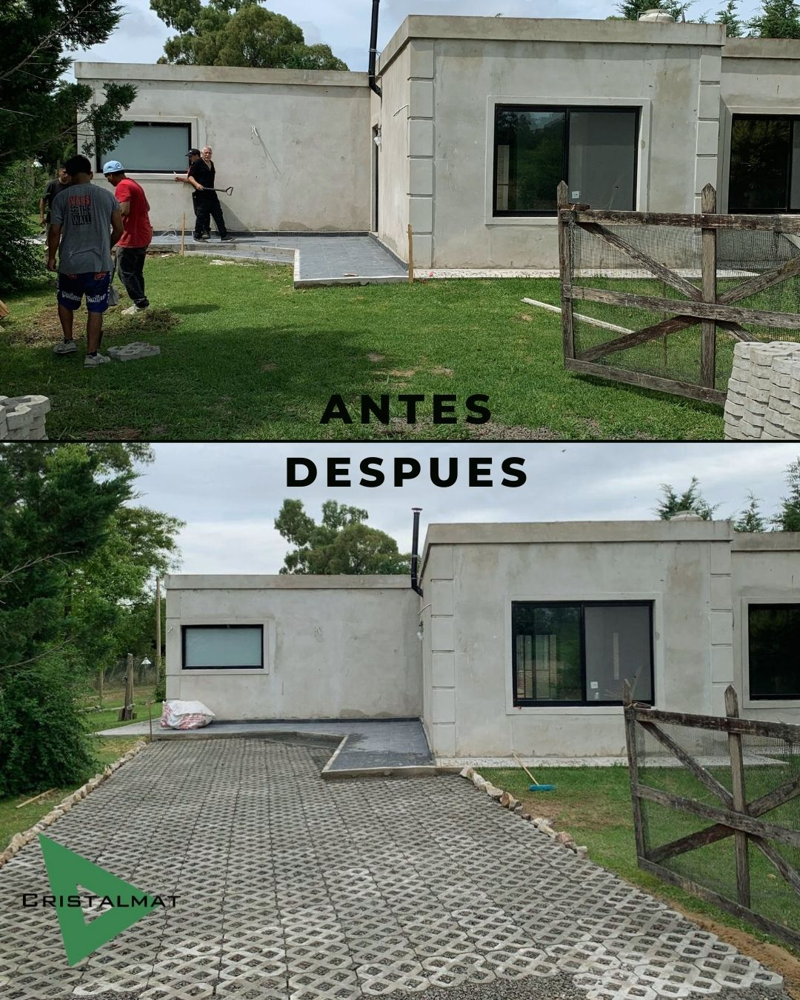
Explorá los modelos y contanos qué espacio querés renovar.
Mandanos la localidad, los metros aproximados y fotos de la obra.
Evaluamos materiales, envío y opciones de colocación para tu espacio.